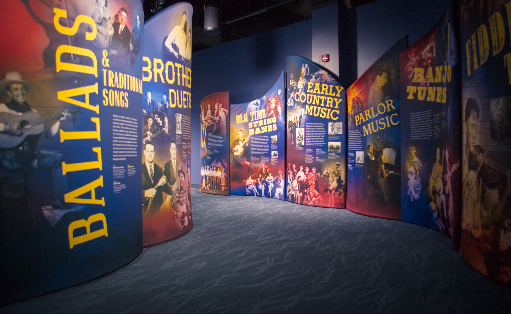

Hall of Fame
The Ones Who Did it the Best
From southwestern Virginia's Scott County, the Carter Family first recorded August 1, 1927. Broadcasting and traveling extensively, the group achieved immense popularity, making approximately 300 studio recordings in its pre-bluegrass style. Many Carter Family-originated songs became notable bluegrass standards its and countless players have reprised the intense, forceful lead guitar techrique immortalized by 'Mother Maybelle' during her career spanning five decades. Singing in a strong, plaintive voice, Sara played the autoharp. Maybelle sang harmony and played guitar; A.P. sang bass. Sara and A.P. entered private life after last recording October 14, 1941; reuniting the trio for six months in 1943 for daily radio broadcasts from WBT, Charlotte, NC. Maybelle continued the Carter Family name and tradition with daughters Helen, June and Anita, joining WSM's Grand Ole Opry in 1950 and performing until shortly before her death October 22, 1978. A.P. died November 7, 1960; Sara on January 8, 1979. A.P. preserved and arranged numerous ballads learned from early settlers during 1920's -30's excursions on vast, remote Clinch Mountain. The enormous A.P. Carter song catalog includes "Wildwood Flower," "Keep On The Sunny Side" and "Will The Circle Be Unbroken?"
 Bluegrass music's demography changed forever when two women took the stage at the head of a full band in 1962. Hazel Dickens and Alice Gerrard represented two worlds that were revitalizing the art form: rural-dwellers moving to the cities and urban intellectuals exploring their interest in folk music. Hazel followed siblings from southernmost West Virginia to Baltimore; Alice left California's Bay Area for college in Ohio and a student job in the nation's capital. The two met at jam sessions and music parks. Hazel's haunting mountain soprano and Alice's WArTh alto were a compelling blend, and both composed memorable songs. Who's That Knocking, released in 1965, inspired many other female artists. After three more albums and a decade together, the two pursued separate careers. Alice moved Virginia and North Carolina, engaged with the traditional music community there, and eventually founded and edited the Old-Time Herald. Hazel's songs, like "Pew Old Memories" and "Mama's Hand," became favorites in bluegrass, while others were featured in movies including Harlan County, U.S.A. and Songcatcher. Both artists continued to perform, record, and advocate for important causes, and were influential mentors to many artists over the years.
Bluegrass music's demography changed forever when two women took the stage at the head of a full band in 1962. Hazel Dickens and Alice Gerrard represented two worlds that were revitalizing the art form: rural-dwellers moving to the cities and urban intellectuals exploring their interest in folk music. Hazel followed siblings from southernmost West Virginia to Baltimore; Alice left California's Bay Area for college in Ohio and a student job in the nation's capital. The two met at jam sessions and music parks. Hazel's haunting mountain soprano and Alice's WArTh alto were a compelling blend, and both composed memorable songs. Who's That Knocking, released in 1965, inspired many other female artists. After three more albums and a decade together, the two pursued separate careers. Alice moved Virginia and North Carolina, engaged with the traditional music community there, and eventually founded and edited the Old-Time Herald. Hazel's songs, like "Pew Old Memories" and "Mama's Hand," became favorites in bluegrass, while others were featured in movies including Harlan County, U.S.A. and Songcatcher. Both artists continued to perform, record, and advocate for important causes, and were influential mentors to many artists over the years.
 With a career spanning the 1970s and 1980s, the New Grass Revival were among the artists at the forefront of progressive bluegrass. Born when its founding members- Curtis Burch, Sam Bush, Courtney Johnson and Ebo Walker- left the Bluegrass Alliance in 1971, the group swiftly became known for a youthful, "counter -cultural" appearance and approach to music, incorporating rock and R&B influences that included extended improvisation. Recording their 1972 debut for Starday Records, the group moved to Flying Fish Records in 1975, with bassist /singer John Cowan on board. The quartet ended the 1970s touring and recording with rock artist Leon Russell, and by the fall of 1981 featured a new lineup with Bush and Cowan joined by banjoist Béla Fleck and guitarist Pat Flynn, recording one album for Sugar Hill Records before signing with Capitol Records and directing their attention to the country music market. NGR's final show was New Year's Eve in 1989. Still, their influence remains unabated, symbolized by the ongoing use of the term "newgrass" to describe all types of progressive bluegrass.
With a career spanning the 1970s and 1980s, the New Grass Revival were among the artists at the forefront of progressive bluegrass. Born when its founding members- Curtis Burch, Sam Bush, Courtney Johnson and Ebo Walker- left the Bluegrass Alliance in 1971, the group swiftly became known for a youthful, "counter -cultural" appearance and approach to music, incorporating rock and R&B influences that included extended improvisation. Recording their 1972 debut for Starday Records, the group moved to Flying Fish Records in 1975, with bassist /singer John Cowan on board. The quartet ended the 1970s touring and recording with rock artist Leon Russell, and by the fall of 1981 featured a new lineup with Bush and Cowan joined by banjoist Béla Fleck and guitarist Pat Flynn, recording one album for Sugar Hill Records before signing with Capitol Records and directing their attention to the country music market. NGR's final show was New Year's Eve in 1989. Still, their influence remains unabated, symbolized by the ongoing use of the term "newgrass" to describe all types of progressive bluegrass.
Back to Exhibit 1
Information provided by The Bluegrass Museum and Hall of Fame.